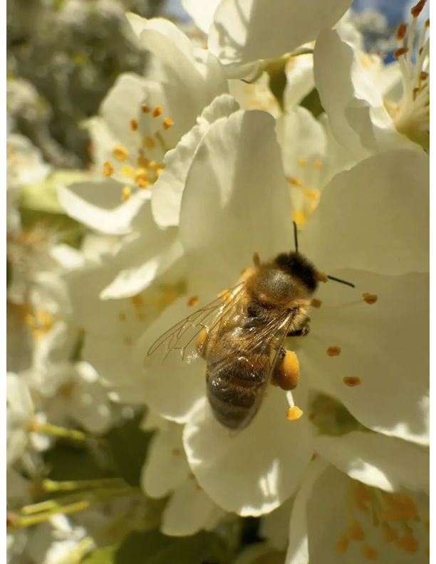

for my summer bee
Kelsie made this playlist for me on June 5, 2026. 3 weeks into summer long distance, we had been arguing a lot and after our last fight, Kelsie spent hours curating a playlist with a very specific order and a lot of her favorite songs relating to long distance love. She wanted us to reconnect through the playlist. It made me so emotional and we felt very connected. I found some amazing songs through it and rated each one as we listened together. - Rohit
Open on Spotify